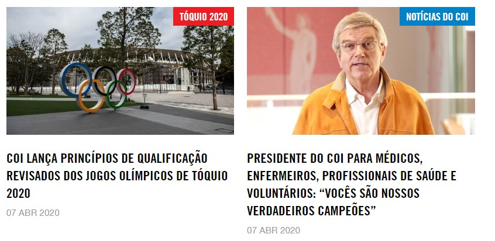
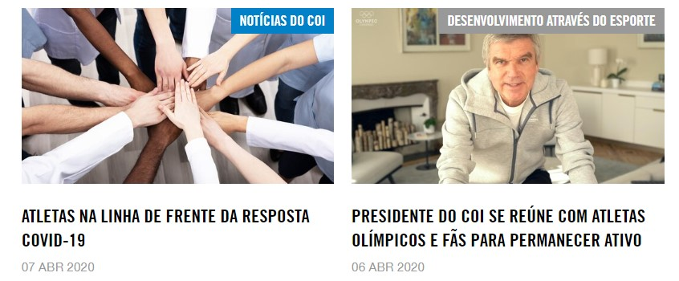

Juan Sebastián Sánchez Díaz usa o esporte para promover a saúde e a reconciliação na Colômbia nos últimos seis anos. Poucos dias antes da celebração do Dia Internacional do Esporte para o Desenvolvimento e a Paz (IDSDP), ele se orgulha de poder apontar para um progresso significativo. Para Juan Sebastián Sánchez Díaz, 6 de abril tem um significado real. Em 2013, a Assembléia Geral das Nações Unidas declarou a data - que reflete o início dos primeiros Jogos Olímpicos modernos em Atenas em 1896 - como uma celebração de 24 horas do poder do esporte para promover a paz e a compreensão. Essa é exatamente a mensagem que Sánchez Díaz dedica seu tempo a se espalhar por um país devastado por conflitos internos. "Vimos uma mudança de mentalidade na maioria dos alunos com quem trabalhamos", disse Sánchez Díaz sobre sua iniciativa do Workshop Olímpico, que leva o hóquei às escolas estaduais e incentiva as comunidades a se unirem em reconciliação. "Compreender como os atletas simbólicos são na Colômbia como modelos para os jovens, e o poder que eles têm para levar mudanças a várias comunidades e indivíduos, tem sido uma das mensagens que mais me impressionaram".
Embora Sánchez Díaz tenha ajudado a realizar várias oficinas desde que voltou inspirado por sua passagem como jovem embaixador nos Jogos Olímpicos da Juventude em Nanjing 2014, é um desenvolvimento recente que o deixou realmente animado. "Temos um caso muito especial em Duitama, uma cidade na Colômbia, onde os estudantes decidiram continuar o clube esportivo e decidiram começar a treinar mais pessoas na comunidade", explicou Sánchez Díaz. “Isso significa que eles tiveram que explorar várias opções de financiamento, como crowdfunding e sorteio, para manter o clube funcionando. Eles entraram em contato com a Federação Colombiana de Hóquei em Campo e estão a caminho de se tornarem treinadores oficiais e até agentes multiplicadores no país. ”
Este é um grande passo em frente para um projeto que sempre contou com treinadores entusiasmados e persuadiu as escolas a valorizar os benefícios que o hóquei pode trazer. A exigência de paus e bolas, e em menor medida os arremessos em que jogar, também tem sido um obstáculo. Mas também é algo que Sánchez Díaz sente que está fazendo um progresso real.
 